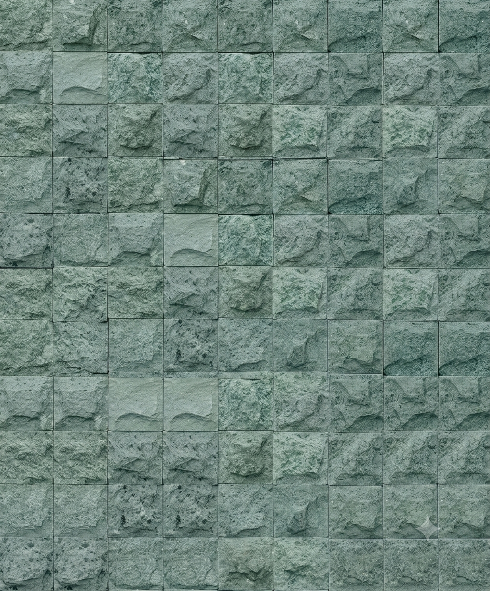
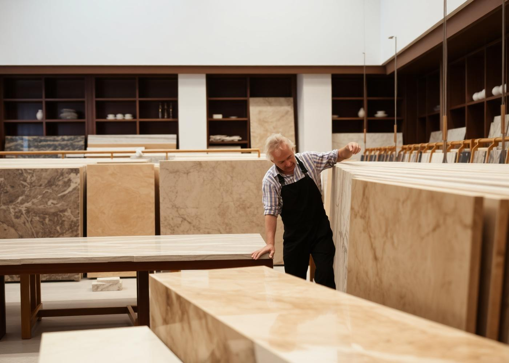
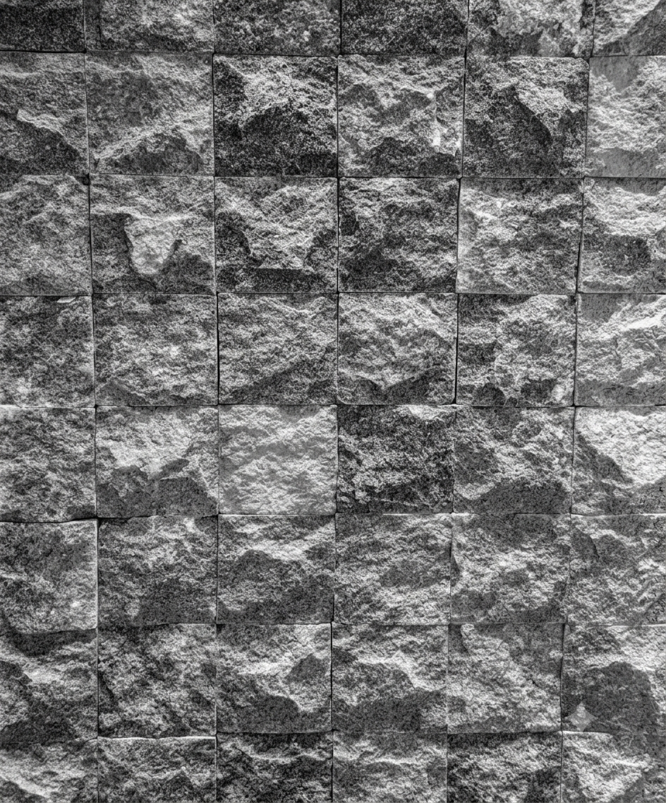
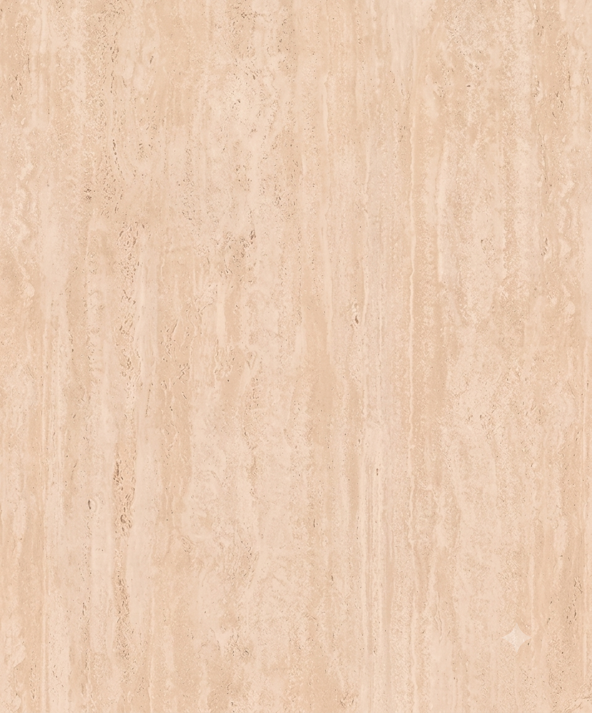
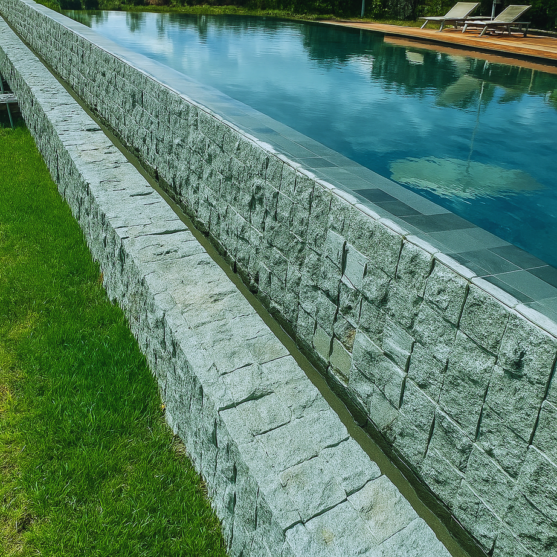
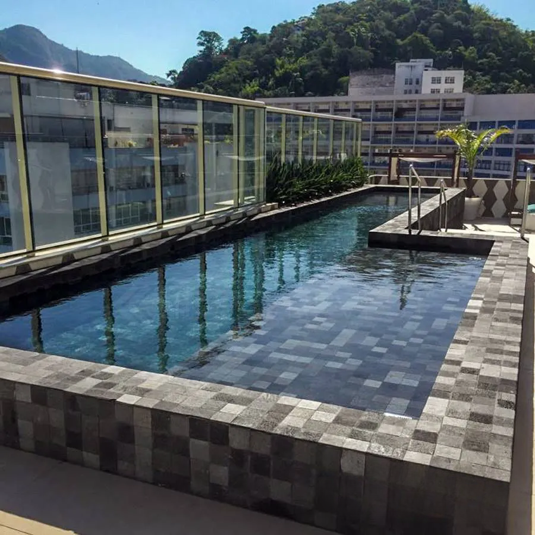
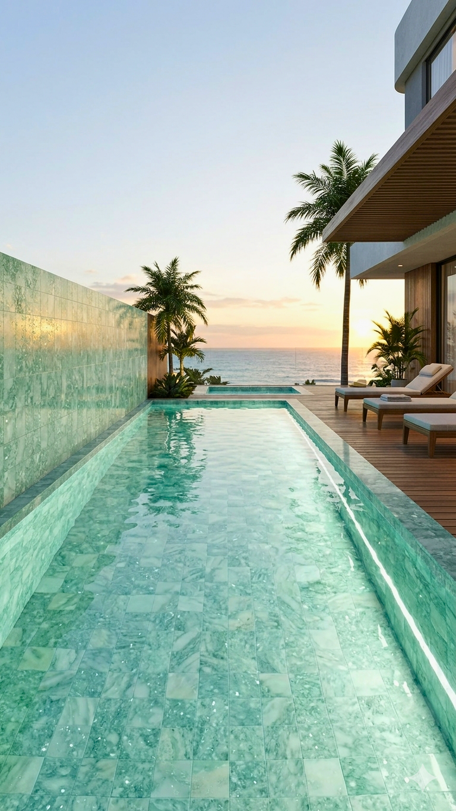

01
Piscinas & Áreas Molhadas
Pedra Hijau
O verde profundo das águas balinesas. Uma pedra vulcânica indonésia que veste piscinas e espelhos d'água com brilho translúcido e sofisticação atemporal.
Ver variantes →5 peças

Revestimentos naturais exclusivos para arquitetura premium — piscinas, saunas, oásis particulares e interiores de assinatura.

Selecionamos, viajamos e importamos peças que carregam a história geológica de seus territórios de origem — da rocha vulcânica de Bali ao travertino romano.
Trabalhamos ao lado de arquitetos e construtores que entendem que uma pedra bem escolhida é a diferença entre um bom projeto e um projeto memorável. Cada obra é um encontro entre matéria bruta e desenho.

O verde profundo das águas balinesas. Uma pedra vulcânica indonésia que veste piscinas e espelhos d'água com brilho translúcido e sofisticação atemporal.

A imponência da rocha vulcânica preta. Ideal para fachadas dramáticas, muros de destaque e piscinas de linhas contemporâneas.

A pedra dos palácios romanos, em toda sua riqueza de acabamentos. Do levigado sereno ao rockface escultural — para projetos que atravessam gerações.

Formas irregulares, tons naturais e a beleza serena do imperfeito. Traz alma, calor e caráter artesanal a fachadas, muros e áreas externas.

Peças raras, de coloração viva e reflexos aquáticos. A escolha definitiva para piscinas assinatura e ambientes que buscam identidade única.

Seixos rolados pela natureza, montados em placas telada. Uma superfície tátil, orgânica e sensorial — para spas, saunas e pisos de assinatura.







Atendimento dedicado, envio de amostras e visitas técnicas ao showroom. Assessoria completa da especificação à obra.